정보통신기사(구) (2008-09-07 기출문제)
1과목: 디지털 전자회로
1. 그림과 같은 트랜지스터 회로에서 Q1의 주된 역할은? (단, Q1과 Q2의 특성은 동일하다.)
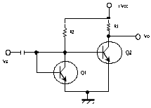
- 입력 신호를 증폭한다.
- Q2와 함께 한개의 PNP 트랜지스터 역할을 한다.
- 출력 전압 VO를 일정히 유지하는 역할을 한다.
- 온도 변화에 따른 바이어스 안정에 기여 한다.
(정답률: 57%)

2. 트랜지스터에서 베이스폭변조(Base width modulation)에 관한 설명으로 가장 적합한 것은?
- 트랜지스터를 제조할 때 베이스 두께를 조정해주는 것을 말한다.
- 트랜지스터의 베이스에 변조전압을 걸어서 동작시키는 것을 말한다.
- 트랜지스터의 접합에 가해지는 바이어스에 의해 베이스의 두께가 변하는 것을 이용한 변조를 말한다.
- 트랜지스터의 포장에 의해 베이스가 영향을 받는 것을 말한다.
(정답률: 48%)
3. 30 : 1의 리플계수기를 만들려면 최소한 몇 개의 플립플롭(filp-flop)이 필요한가?
- 5개
- 10개
- 15개
- 30개
(정답률: 54%)
4. 다음 카르노맵을 논리식으로 간략화한 식은?
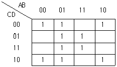
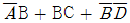
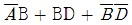
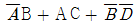
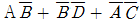
(정답률: 48%)
5. 다음과 같이 주어진 불 대수를 간소화한 것은?
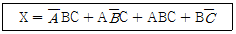
- AC +B
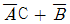
- AB +C
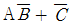
(정답률: 49%)
6. 다음 그림은 시미트 트리거 회로이다. 이 회로의 설명 중 틀린 것은?
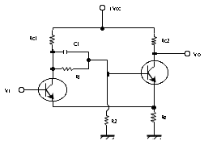
- 출력에 2개의 안정 회로를 갖는 회로이다.
- 펄스 파형을 만드는 회로에는 적합하지 못하다.
- 궤환 효과는 공통 이미터 저항을 통하여도 이루어진다.
- 입력 전압의 크기가 On, Off 상태를 결정하여 준다.
(정답률: 69%)
7. 다음 그림과 같은 회로의 논리식은 ?
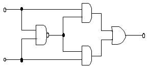
- Z = ( A + B ) A B
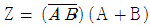
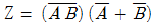
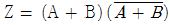
(정답률: 52%)
8. 수정 발진기의 주파수 안정도가 양호한 이유로 부적합한 것은?
- 수정편은 온도의 변화에 민감하다.
- 수정편의 Q가 매우 높다.
- 수정진동자는 기계적 및 물성적으로 안정하다.
- 발진 조건을 만족하는 유도성 주파수 범위가 매우 좁다.
(정답률: 41%)
9. 그림과 같은 CR 회로에서 지수 함수적으로 증가하는 경우는?
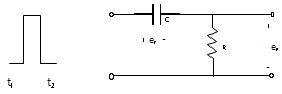
- t1 ~ t2 에서의 ec
- t1 ~ t2 에서의 eR
- t2 에서의 ec
- t2 에서의 ( eR + ec )
(정답률: 43%)
10. 그림의 달링톤 회로에서 Q2 의 이미터에 흐르는 전류 iE 는?
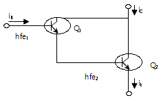
- hfe1 hfe2 iB
- ( hfe1 + hfe2 ) iB
- ( 1 + hfe1 ) hfe2 iB
- ( 1 + hfe1 )( 1 + hfe2 ) iB
(정답률: 52%)
11. 다음 중 연산 증폭회로에서 전압이득(
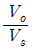
)은?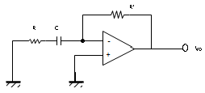
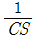
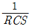
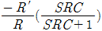
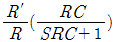
(정답률: 59%)
12. 다음 중 CMRR(Common Mode Rejection Ratio) 에 대한 설명으로 틀린 것은?
- CMRR = 차동이득/동상이득 으로 정의된다.
- 실제의 차동 증폭기의 성능을 평가할 중요한 파라미터이다.
- CMRR는 작을수록 차등 증폭기의 성능이 좋다.
- 이상적인 차동 증폭기에서는 출력이 차신호에 비례하므로 동상이득은 0 이어야 한다.
(정답률: 50%)
13. 비안정 멀티바이브레이터에 대한 설명으로 틀린 것은?
- 출력 파형에 많은 고조파가 포함되어 있다.
- 발진주파수는 회로의 시정수에 의해서 결정된다.
- 동작전압 범위 내에서 전원 전압의 변동은 발진주파수에 큰 영향을 주지 않는다.
- 두 개의 안정된 상태를 갖는다.
(정답률: 54%)
14. 다음 회로의 적합한 명칭은?
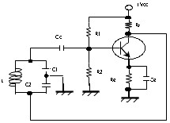
- 동조형 고주파 증폭기
- 하틀레이 발진기
- 콜피츠 발진기
- 부궤환 증폭기
(정답률: 55%)
15. 공진주파수 fo = 455 [kHz], 대역폭이 10 [kHz]인 병렬공진 회로를 만들려고 한다. Q의 값은 얼마가 적합한가?
- 22.8
- 32.2
- 45.5
- 91.0
(정답률: 68%)
16. 다음 중 전기적으로 저장된 내용을 지우고 새로운 데이터를 저장할 수 있는 기억장치는?
- ROM
- EPROM
- EEPROM
- PROM
(정답률: 60%)
17. 그림의 정전압회로에서 V가 25~28 [V]의 범위에서 변동한다. 제너다이오드 전류 ID의 변화는? (단, RL = 1[㏀], V = 28[V], VL = 20[V] 이다.)
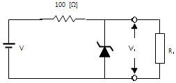
- 30 ~ 50 [mA]
- 30 ~ 60 [mA]
- 10 ~ 50 [mA]
- 10 ~ 60 [mA]
(정답률: 47%)
18. 부궤환 증폭회로를 사용하여 전압이득이 반으로 줄어들면 대역폭의 변화는?
- 2배로 넓어진다.
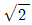
배로 넓어진다.- 변함이 없다.
- 1 /
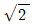
로 좁아진다.
(정답률: 58%)
19. 그림의 연산 증폭회로에서 출력전압(VO)은 얼마인가?
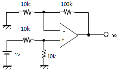
- 5.5 [V]
- 10.5 [V]
- 11 [V]
- 21 [V]
(정답률: 29%)
20. 다음 중 FET와 TR의 차이점이 아닌 것은?
- FET는 TR보다 입력 저항이 크다.
- TR은 양극성 소자이고 FET는 단극성 소자이다.
- FET는 TR보다 잡음이 적다.
- FET는 TR보다 이득대역폭적이 크다.
(정답률: 47%)
2과목: 정보통신 시스템
21. OSI 데이터링크계층의 프로토콜 주요 기능이 아닌 것은?
- 프레임의 순서제어
- 흐름제어
- 중계제어
- 에러제어
(정답률: 50%)
22. 다음 중 위성통신 시스템에 대한 설명으로 틀린 것은?
- 다원접속이 가능하다.
- 동시 동보성을 지닌다.
- 기상 이변 등 지상 재해의 영향이 적다.
- 수명이 영구적이다.
(정답률: 67%)
23. 다음 중 OSI 참조 모델 7계층에 해당되지 않는 것은?
- 물리 계층 (physical layer)
- 인터넷 계층 (internet layer)
- 트랜스포트 계층 (transport layer)
- 세션 계층 (session layer)
(정답률: 76%)
24. 다음 중 인터네트워킹(Internetworking)과 가장 관련 없는 것은?
- 브리지
- 멀티플렉서
- 라우터
- 게이트웨이
(정답률: 84%)
25. 다음 중 IEEE 표준의 무선 LAN 방식은?
- IEEE 802.2
- IEEE 802.4
- IEEE 802.9
- IEEE 802.11
(정답률: 80%)
26. 다음 중 백색잡음(White noise)이란 무엇인가?
- 가우스 잡음으로 제한된 대역폭을 갖는 잡음
- 임펄스성 잡음으로 제한된 대역폭을 갖는 잡음
- 백색을 나타내는 저주파수대로 이루어진 잡음
- 모든 주파수에 걸쳐서 포함된 잡음
(정답률: 55%)
27. 인터넷 프로토콜인 IPv 6에서 IP 주소는 몇 개의 비트로 구성되는가?
- 32
- 64
- 128
- 256
(정답률: 69%)
28. HDLC의 프레임 구조의 순서가 옳은 것은? (단, F : 플래그, A : 어드레스부, C : 제어부, I : 정보부, FCS : 플래그 검사 스퀀스 )
- F - A - C - I - FCS - F
- F - I - C - A - FCS - F
- F - A - I - C - FCS - F
- F - I - A - C - FCS - F
(정답률: 63%)
29. 회선을 측정한 결과 통화신호의 세기 레벨이 -4 [dB]이고, 잡음세기의 레벨이 -50 [dB]일 때 S/N 비는?
- 24 [dB]
- 32 [dB]
- 42 [dB]
- 46 [dB]
(정답률: 60%)
30. DSB의 전송 대역폭은 신호 대역폭의 몇 배인가?
- 1배
- 2배
- 3배
- 4배
(정답률: 74%)
31. 다음 중 CSMA / CD 방식의 특징으로 옳지 않은 것은?
- 충돌이 발생하면 랜덤 시간 동안 기다린 후에 다시 전송을 시도한다.
- 토큰 공유 방식으로 데이터 속도가 낮다.
- 전송시 충돌이 감지되면 jamming 신호를 보낸다.
- 모든 컨트롤러는 동일한 액세스 권리를 갖는다.
(정답률: 37%)
32. TCP / IP에 대한 설명으로 적합하지 않은 것은?
- 전송제어 프로토콜과 인터넷 프로토콜을 의미한다.
- FTP, TELNET, HTTP 등은 TCP / IP와는 별개로 동작하는 통신 프로토콜 또는 응용프로그램이다.
- TCP / IP의 시조는 ARPAnet 이다.
- 인터넷은 주로 TCP / IP 프로토콜과 응용 프로그램을 사용한다.
(정답률: 55%)
33. ITU-T에서 권고한 TMN 관리 계층 중 성능관리, 고장관리, 구성관리, 과금관리 및 안전관리의 기능으로 구성된 계층은?
- 사업관리 계층 (BML)
- 서비스관리 계층 (SML)
- 망관리 계층 (NML)
- 요소관리 계층 (EML)
(정답률: 40%)
34. 다음 중 통신 제어장치의 기능이 아닌 것은?
- 문자의 조립, 분해
- 에러의 검출, 제어
- 신호의 증폭, 재생
- 회선의 감시, 접속제어
(정답률: 38%)
35. 망형 회선망에서 n개의 노드를 직접 연결한다면 필요한 회선수는 어떻게 되는가?
- n
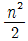
- n(n – 1)
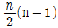
(정답률: 75%)
36. 다음 중 고장 빈도수와 고장이 나서 링크를 복구하는데 소요되는 시간은 망에서 주로 무엇의 척도가 되는가?
- 신뢰성(reliability)
- 성능(performance)
- 보안(security)
- 타이밍(timing)
(정답률: 63%)
37. 다음 중 광통신 시스템에서 파장 분할 다중화방식(WDM)을 사용할 때 가장 큰 장점은?
- 전송거리가 길어진다.
- 전송용량을 크게 할 수 있다.
- 광수신기의 특성이 좋아진다.
- 전송손실이 감소한다.
(정답률: 58%)
38. B-ISDN에 대한 설명으로 적합하지 않은 것은?
- 다양한 속도의 트래픽을 전달할 수 있다..
- 모든 정보는 64바이트 길이의 셀에 실어 전달한다.
- 다양한 품질을 요구하는 트래픽을 동시에 수용할 수 있다.
- 가상경로 개념을 도입하여 망운용 및 관리를 할 수 있다.
(정답률: 60%)
39. 다음 중 패킷 교환방식의 설명으로 틀린 것은?
- 디지털 전송방식을 사용한다.
- 속도 및 프로토콜 변환이 가능하다.
- 축적 교환방식을 이용한다.
- 많은 양의 정보를 연속으로 보낼 때 가장 유효한 방식이다.
(정답률: 70%)
40. 정보량의 측정 단위로써 불규칙성, 예층 불가능의 측정 단위로 이용되는 것은?
- 코드 (code)
- 스펙트럼 (specrtum)
- 펄스 (pulse)
- 엔트로피 (entropy)
(정답률: 50%)
3과목: 정보통신 기기
41. 국내 아날로그 TV방송 방식과 채널당 주파수 대역이 옳은 것은?
- NTSC, 8[㎒]
- NTSC, 6[㎒]
- PAL, 6[㎒]
- SECAM, 6[㎒]
(정답률: 67%)
42. 다음 중 정보전송기기에서 주파수 스펙트럼의 이용효율이 가장 좋은 방식은?
- 16QAM
- FSK
- ASK
- PSK
(정답률: 67%)
43. 다음 중 트래픽 단위의 관계가 옳은 것은?
- 1[Erl] = 36[HCS]
- 1[HCS] = 36[Erl]
- 1[HCS] = 1[Erl]
- 1[Erl] = 1/36[HCS]
(정답률: 60%)
44. 다음 중 NTSC 컬러 TV의 음성신호를 변조하는 방식은?
- AM
- PCM
- VSB
- FM
(정답률: 50%)
45. 주로 은행 등 금융관계의 방범용 시스템, 교통상황 감시 시스템 등에 사용되고 있는 것은?
- CATV
- CCTV
- HDTV
- VRS
(정답률: 80%)
46. 다음 중 FM 수신기의 구성요소가 아닌 것은?
- 국부 발진기
- 중간주파 증폭기
- 주파수 변별기
- IDC 회로
(정답률: 48%)
47. 다음 중 CDMA의 일반적인 특성이 아닌 것은?
- 전력제어가 필요 없다.
- 가입자 수용 용량이 크다.
- 다중 경로 페이딩에 강하다.
- 비화성이 비교적 우수하다.
(정답률: 49%)
48. 팩시밀리의 압축 부호화 방식 중 MR 부호화 방식의 모드에 해당되지 않는 것은?
- 전달 모드
- 패스 모드
- 수평 모드
- 수직 모드
(정답률: 54%)
49. MHS에서 이용자에게 메시지의 편집 기능 등을 제공하는 구성 요소는?
- UA(User Agent)
- MTA(Message Transfer Agent)
- MS(Message Store)
- AU(Access Unit)
(정답률: 72%)
50. 네트워크를 서로 연결하여 상호접속을 위한 망간연동장치로 사용되지 않는 것은?
- 리피터
- 브리지
- 라우터
- 트랜시버
(정답률: 77%)
51. 위성통신에서 위성을 효과적으로 운영하기 위한 다원접속 방법이 아닌 것은?
- WDMA
- TDMA
- FDMA
- CDMA
(정답률: 65%)
52. 다음 중 다중방송의 종류가 아닌 것은?
- CATV 다중방송
- 팩시밀리 다중방송
- 문자 다중방송
- 음성 다중방송
(정답률: 36%)
53. 다음 중 전화교환기의 제어방식에 속하지 않는 것은?
- 단독제어방식
- 공통제어방식
- 피드백제어방식
- 축적프로그램제어방식
(정답률: 52%)
54. 다음 중 LAN의 매체 접속제어 방식이 아닌 것은?
- 버스전달 방식
- 토큰링 방식
- 토큰버스 방식
- CSMA / CD 방식
(정답률: 60%)
55. 다음 중 PCM 신호 수신시 사용되는 필터로 적합한 것은?
- LPF
- HPF
- BPF
- BEF
(정답률: 30%)
56. 주파수 분할 다중화에서 부채널간의 상호간섭을 방지하기 위한 완충지역은?
- Guard band
- Guard time
- Channel
- Sub group
(정답률: 73%)
57. 8진 PSK 변조 방식을 사용한 모뎀에서 데이터 전송속도가 19200 [bps]인 경우 변조속도 [baud]는?
- 19200
- 9600
- 6400
- 4800
(정답률: 62%)
58. 다음 중 무선송신기의 AGC 회로의 이득은 무엇에 의해 제어되는가?
- Mixer
- IF Amplifier
- Detector
- Audio Amplifier
(정답률: 66%)
59. 다음 중 위성통신 시스템에서 위성중계기의 신호 증폭부가 갖추어야 할 요건이 아닌 것은?
- 고신뢰성
- 고효율성
- 경량성
- 협대역성
(정답률: 67%)
60. 다음 중 팩시밀리(Facsimile)의 주사방법에 해당하는 것은?
- 원통주사
- 입체주사
- 삼각주사
- 원주사
(정답률: 66%)
4과목: 정보전송 공학
61. 다음 중 두 엔티티(entity) 간에 교환되는 프로토콜ㅇ 데이터 유니트(PDU)가 가지는 제어정보가 아닌 것은?
- 주소
- 데이터 형식
- 에러검출 코드
- 프로토콜 제어정보 (필드)
(정답률: 32%)
62. CRC 에러체크 방식 수신기에서 수신한 메시지 다항식과 생성다항식이 다음과 같을 때 결과 해석으로 올바른 것은?
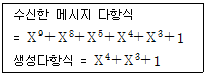
- 에러가 발생하지 않는다.
- 1비트의 에러가 발생하였다.
- 2비트의 에러가 발생하였다.
- 3비트의 에러가 발생하였다.
(정답률: 43%)
63. 16진 QAM 의 전송 대역폭 효율은 몇 [bps/Hz]인가?
- 2 [bps/Hz]
- 4 [bps/Hz]
- 8 [bps/Hz]
- 16 [bps/Hz]
(정답률: 52%)
64. 다음 중 X. 25에 해당하는 교환 방식은?
- 회선 교환
- 메시지 교환
- 패킷 교환
- 프레임 릴레이 교환
(정답률: 63%)
65. 음성신호 S(t) = 3 cos 500 t를 8비트 PCM을 이용하여 양자화 했을 경우 신호대 양자화 잡음비는 몇 [dB] 인가?
- 48 [dB]
- 50 [dB]
- 56 [dB]
- 64 [dB]
(정답률: 44%)
66. 다음 중 동기식 전송방식에 대한 설명으로 적합하지 않은 것은?
- 송신측과 수신측은 동기되어 있으므로 동기문자 또는 특수 비트열의 사용이 필요하지 않다.
- 비동기(START-STOP) 방식보다 전송속도가 높다.
- 전송되는 글자들 사이에는 휴지시간을 두지 않는다.
- 송 ㆍ 수신측 모두 버퍼기억장치를 가지고 있어야 한다.
(정답률: 42%)
67. OSI 참조모델(7 Layer) 중 6계층의 기능에 대한 설명으로 가장 적합한 것은?
- 정보전송을 위한 데이터회선의 설정, 유지, 해제 기능 수행
- 다양한 정보의 표현 형식을 공통의 전송형식으로 변환, 암호화, 압축 등의 기능 수행
- 통신망의 품질을 보상하고 에러검출, 정정 및 다중화 기능 수행
- 응용 프로세서 간의 정보교환 및 인터페이스 등의 응용 기능 수행
(정답률: 67%)
68. 다음 중 정합 필터에 대한 설명으로 적합하지 않은 것은?
- 정합 필터의 출력은 입력신호의 에너지와 같다.
- 정합 필터의 최적 임계치는 입력 신호 에너지의 반과 같다.
- 정합 필터는 신호성분을 강조하고 잡음성분을 억제하는 기능을 갖는다.
- 정합 필터는 본질적으로 동기 검파기이며 하나의 곱셈기와 하나의 미분기로 구현할 수 있다.
(정답률: 54%)
69. 다음 중 컴팬딩(Companding)을 수행하는 목적으로 적합한지 않은 것은?
- 선형 양자화를 하면서도 비선형 양자화의 효과를 얻기 위하여
- 양자화 계단의 크기가 시간에 따라 변화 되도록 하기 위해서
- 양자화시 사용하는 비트수를 증가시키지 않으면서도 신호대 양자화 잡음비를 향상 시키기 위해서
- 작은 PAM 신호 및 큰 PAM 신호 모두에 대해 일정한 신호대 양자화 잡음비를 얻기 위해서
(정답률: 37%)
70. 다음의 손실 중 광섬유 케이블에서 야기되는 손실이 아닌 것은?
- 유도 손실
- 흡수 손실
- 산란 손실
- 마이크로밴딩 손실
(정답률: 40%)
71. 다음 중 델타변조(DM)에 대한 설명으로 가장 적합한 것은?
- 하드웨어가 복잡하다.
- 일반적으로 예측기는 비선형 예측기를 사용한다.
- 통상 PCM의 표본화주파수와 동일한 주파수를 사용한다.
- 스텝 사이즈를 크게 하면 그래뉼러 잡음(Granular Noise)은 증가한다.
(정답률: 57%)
72. 다음 중 구스 헨첸 이동(Goos Hanchen Shift)과 가장 관련이 깊은 것은?
- 형태분산
- 다중모드
- 구조분산
- 재료분산
(정답률: 61%)
73. 다음 중 CMI 코드에 대한 설명으로 적합하지 않은 것은?
- CEPT 다중화 계위의 4계위에서 사용한다.
- 직류 성분이 존재하지 않으며 동기 효과가 우수하다.
- 전송부호의 클럭주파수는 입력신호주파수의 2배가 된다.
- '1'은 한 펄스의 폭을 2개로 나누어 반구간은 양 펄스, 나머지 반구간은 음 펄스로 구성되고, '0'은 '1'과 반대로 구성된다.
(정답률: 59%)
74. 두 개의 코드 C1과 C2가 다음과 같을 때, 두 코드 사이의 해밍거리는 얼마인가?
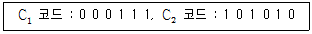
- 1
- 2
- 3
- 4
(정답률: 60%)
75. 다음 중 HDLC 프레임에 대한 설명으로 가장 적합하지 않은 것은?
- 제어영역은 프레임의 종류를 식별하기 위해 사용된다.
- 주소영역은 보통 8비트로 구성되며 프레임을 수신하거나 송신하는 부스테이션을 식별하기 위해 사용된다.
- FCS는 플래그를 제외한 전달되는 프레임 내용에 대한 오류 검출을 위하여 사용되며, 사용 코드로 CRC 방식을 사용한다.
- 정보영역은 사용자 사이에 교환되는 데이터를 실어 보내게 되며 플래그 01111110을 포함한다.
(정답률: 53%)
76. 다음 중 데이터링크 프로토콜과 관계가 없는 것은?
- ABP
- SRP
- Go Back N
- ARP
(정답률: 20%)
77. 다음 중 OFDM에 대한 설명으로 적합하지 않은 것은?
- FFT(Fast Fourier Transform)에 의한 변복조 처리가 가능하다.
- 다중 경로 페이딩에 강하다.
- 반송파의 주파수 옵셋과 위상잡음에 민감하다.
- 사용자의 데이터 열에 따라 반송주파수를 변화한다.
(정답률: 40%)
78. 다음 중 마이크로파 통신에서 헤테로다인 중계방식의 구성품이 아닌 것은?
- 변조기
- 주파수 변환기
- 전력 증폭기
- 중간주파 증폭기
(정답률: 28%)
79. QPSK 변조시 각 신호 간의 위상차는 얼마인가?
- 45°
- 90°
- 135°
- 180°
(정답률: 75%)
80. 가상회선방식에 대한 설명 중 적합하지 않은 것은?
- 모든 패킷은 설정된 경로에 따라 전송된다.
- 패킷을 전달하는 신뢰성은 데이터그램 방식보다 떨어진다.
- 경로가 미리 결정되기 때문에 각 노드에서의 데이터 패킷의 처리속도가 그 만큼 빠르게 된다.
- 수신지의 마지막 노드에서는 송신지에서 송신한 순서와 다르게 패킷이 도착할 수 있다.
(정답률: 45%)
5과목: 전자계산기일반 및 정보통신설비기준
81. Operating System의 목적이라 볼 수 없는 것은?
- 신뢰도의 향상
- 응답시간의 연장
- 사용가능도의 향상
- 처리능력의 향상
(정답률: 60%)
82. 동적(Dynamic) RAM의 특징으로 적당하지 않은 것은?
- 대용량 구성이 용이하다.
- 소비전력이 SRAM에 비해 적다.
- 처리속도가 SRAM에 비해 떨어진다.
- refresh 회로가 필요치 않다.
(정답률: 48%)
83. 기억자잋 사상 I/O(memory-mapped I/O) 방식에 대한 설명으로 적합하지 않은 것은?
- I/O 제어기 내의 레지스터들을 기억장치 내의 기억장소들과 동일하게 취급한다.
- 레지스터들의 주소도 기억장치 주소영역의 일부분을 할당한다.
- 기억장치와 I/O 레지스터들을 액세스할 때 동일한 기계 명령어들을 사용할 수 있다.
- 이 방식을 사용하여도 기억장치 주소 공간은 줄어들지 않는다.
(정답률: 57%)
84. 다음에 실행할 명령어가 기억되는 주기억장치의 번지를 기억하고 있는 레지스터로 명령어가 수행할 때 마다 1~4 바이트의 일정한 값 만큼씩 증가 되는 레지스터는?
- PC
- IR
- PSW
- MAR
(정답률: 55%)
85. 다음 중 채널 명령어의 구성에 포함되지 않는 것은?
- 명령코드
- 채널명령어의 시작위치
- 플래그
- 데이터크기
(정답률: 22%)
86. 부동 소수점 표현의 수들 사이에서 곱셈 알고리즘 과정에 해당하지 않은 것은?
- 0(zero) 인지의 여부를 조사한다.
- 가수의 위치를 조정한다.
- 가수를 곱한다.
- 결과를 정규화 한다.
(정답률: 56%)
87. 이동 헤드 디스크(moving head disk) 장치의 데이터 전송 연산시간 중에서 가장 큰 비중을 차지하는 것은?
- 탐구 시간(seek time)
- 회전지연시간(latency time)
- 전송시간(transmission time)
- 신호전달시간(signal transfer time)
(정답률: 43%)
88. 다음의 운영체제 중 서버용 컴퓨터의 운영체제가 아닌 것은?
- UNIX
- Windows NT
- Windows CE
- Linux
(정답률: 64%)
89. 다음 자료는 Even Parity를 포함하고 있다. 다음 중 잘못된 비트는?(오류 신고가 접수된 문제입니다. 반드시 정답과 해설을 확인하시기 바랍니다.)
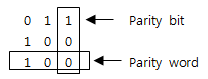
- 1행 1열의 비트
- 1행 2열의 비트
- 2행 1열의 비트
- 2행 2열의 비트
(정답률: 66%)
90. 파이프라인에 의한 이론 최대 속도 증가율을 내지 못하는 주된 이유가 아니 것은?
- 병목현상
- 자원회피
- 데이터 의존성
- 분기 곤란
(정답률: 32%)
91. 다음 중 정보통신공사사업자가 반드시 시공하여야 하는 공사가 아닌 것은?
- 종합유선방송전송선로 설비 등 구내통신설비공사
- 무선가입자망설비(WLL) 등 고정무선통신설비공사
- 전방향표식(VOR)설비 등 항공 ㆍ 항만통신설비공사
- 기간통신사업자가 허가받은 역무를 수행하기 위하여 시공하는 공사
(정답률: 42%)
92. 전화급 평형회선은 회선 상호 간 전기통신신호의 내용이 혼입되지 아니하도록 두 회선 사이의 근단누화 또는 원단누화의 감쇠량은 몇 데시벨 이상이어야 하는가?
- 48 데시벨
- 58 데시벨
- 68 데시벨
- 78 데시벨
(정답률: 41%)
93. 기간통신사업자가 전기통신설비의 설치 · 보전을 위한 측량 · 조사 등을 위하여 타인의 주거용 건물에 출입하고자 할 때에 가장 적합한 절차는?
- 임의로 출입한다.
- 거주자에게 미리 통보하고 출입한다.
- 거주자의 승낙을 얻은 후 출입한다.
- 신분을 증명하는 증표를 제시하고 출입한다.
(정답률: 60%)
94. 다음 중 정보통신공사업의 등록기준이 아닌 것은?
- 자본금
- 기술능력
- 사무실
- 공사실적
(정답률: 50%)
95. 다음 ( ) 안에 들어갈 내용으로 가장 적합한 것은?
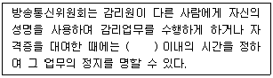
- 6월
- 1년
- 2년
- 3년
(정답률: 48%)
96. 정보통신공사를 설계한 용역업자는 그가 작성 또는 제공한 실시설계도서를 해당 공사가 준공된 후 몇 년간 보관하여야 하는가?
- 1년
- 3년
- 5년
- 7년
(정답률: 41%)
97. 대통령령이 정하는 구내에 전기통신설비를 설치하거나 이를 이용하여 그 구내에서 전기통신업무를 제공하는 사업은?
- 기간통신사업
- 별정통신사업
- 구내통신사업
- 부가통신사업
(정답률: 42%)
98. 다음 중 시 · 도지사가 대통령령이 정하는 바에 따라 그 내용을 공고하지 않아도 되는 것은?
- 정보통신공사업의 등록을 한 때
- 정보통신공사업의 등록을 취소한 때
- 정보통신공사 현장에 배치된 감리원이 변경된 때
- 정보통신공사업의 상속으로 대표자가 변경된 때
(정답률: 30%)
99. 다음 중 정보통신공사업자가 품위의 유지, 기술의 향상, 공사 시공방법의 개량 기타 정보통신공사업의 건전한 발전을 위하여 방송통신위원회의 인가를 받아 설립한 것은?
- 정보통신공제조합
- 정보통신공사협회
- 정보통신기술협회
- 한국정보화사회진흥원
(정답률: 47%)
100. 다음 중 감리원의 업무범위가 아닌 것은?
- 공사계획 및 공정표의 검토
- 하자담보 기간 및 방법 검토
- 하도급에 대한 타당성 검토
- 재해예방대책 및 안전관리의 확인
(정답률: 23%)